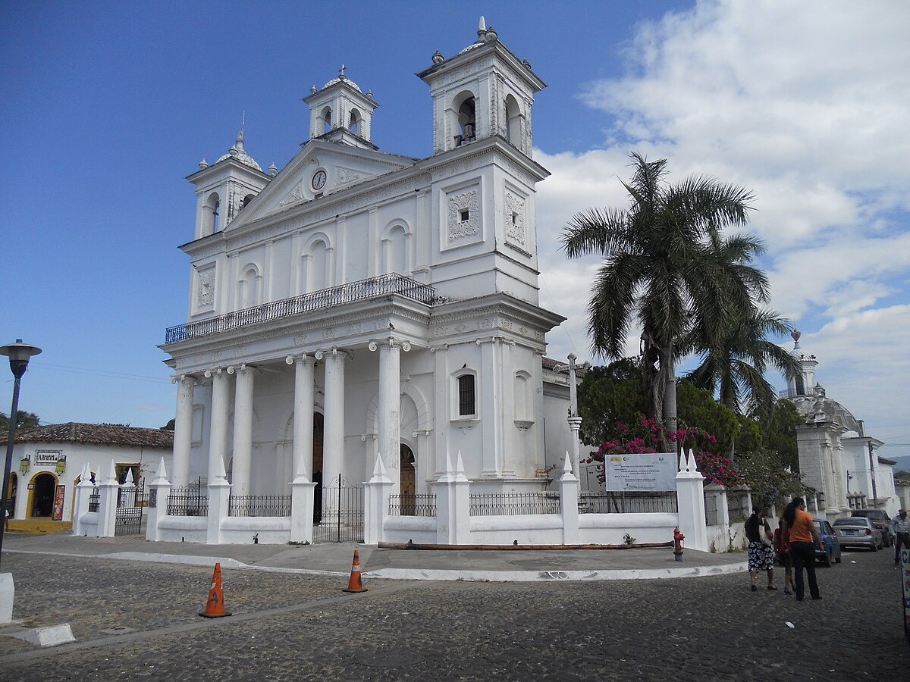

Historia
Suchitoto es una ciudad colonial ubicada en el departamento de Cuscatlán, conocida por su arquitectura histórica y su ambiente cultural. Fundada en el siglo XVI, ha sido un centro de arte, festivales y tradición salvadoreña, conservando calles empedradas y casas con balcones coloniales.
Ubicación
Se encuentra a aproximadamente 50 km al noreste de San Salvador, cerca del Lago Suchitlán. Es accesible por carretera desde la capital y es un destino turístico que combina historia, naturaleza y cultura.
¿Por qué es famosa?
- Arquitectura colonial: Calles empedradas y casas con balcones que conservan la historia de la ciudad.
- Arte y cultura: Centros culturales, galerías y festivales de música y danza.
- Lago Suchitlán: Proximidad al lago que ofrece actividades acuáticas y paisajes únicos.
Qué hacer en Suchitoto
- Paseos históricos: Recorrer la iglesia Santa Lucia y plazas coloniales.
- Arte y talleres: Visitar galerías y participar en talleres de artesanía local.
- Ecoturismo: Paseos en kayak o bicicleta alrededor del Lago Suchitlán.
- Gastronomía: Disfrutar de comida típica salvadoreña en restaurantes locales.
Cómo llegar
En vehículo privado:
- Desde San Salvador, toma la Carretera Panamericana hacia Apaneca y luego sigue las señales hacia Suchitoto.
En transporte público:
- Desde San Salvador, toma un bus hacia Cuscatlán y luego transporte local hacia Suchitoto.
Galería

